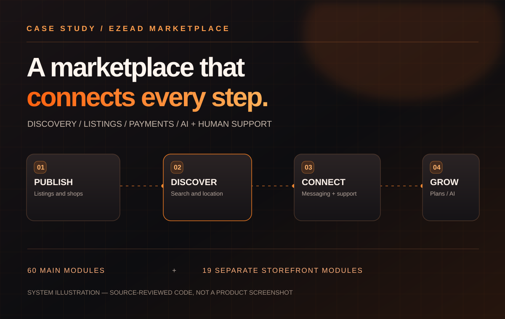

Marketplace engine
Publish and moderate classified ads, custom category fields, shop profiles and location-specific discovery.
SYSTEM CASE STUDY · CLASSIFIEDS / AI AUTOMATION
A connected marketplace, from the first listing to the last human handoff.
A source-reviewed look inside a multi-country classifieds ecosystem: flexible publishing, geo-aware discovery, direct buyer–seller conversations, monetization, moderation and an AI-to-human customer support path.

CONCEPTUAL SYSTEM ILLUSTRATION · NOT A PRODUCT SCREENSHOTThe engineering story is about connecting marketplace complexity into workflows people can use—not claiming unverified production metrics.
Publish and moderate classified ads, custom category fields, shop profiles and location-specific discovery.
AI first-response eligibility, confusion detection, agent queues and human escalation paths.
Packages, listing boosts, PayPal subscription code and a tracked webhook/audit workflow.
KYC review, roles, permissions, content management, analytics screens and operational tools.
Two distinct applications. Explore their journeys without conflating the codebases or assuming these diagrams represent production telemetry.
Accounts, verification, seller profiles and permission checks.
Separate store catalog, brands, filters and product details.
Schematic interaction only. No real account, payment, model, or support action runs on this page.
Expand each module for functionality, data contracts, implementation status and direct links to code. “Source-implemented” does not mean deployed or runtime-tested.
Showing 60 of 60 modules
Separate browser and API login flows, account creation, logout, form validation, auth field checks and sessions/tokens. The API login code uses custom auth helpers; inspect actual route middleware before consuming authenticated endpoints.
Data & contracts User; PasswordReset; personal access tokens.
Evidence status: Source-implemented; deployment unverified.
Email or phone reset token flow, forgotten-password actions and password change. Verification code traits exist for both API and browser clients.
Data & contracts PasswordReset; User.
Evidence status: Source-implemented.
Provider redirects and callbacks handled by Web/Auth/SocialController and Api/Auth/SocialController. A second ThirdPartyLogin controller contains Google, Facebook, LinkedIn, Twitter methods; some older web routes are commented, so confirm reachable paths per provider.
Data & contracts User; provider identity.
Evidence status: Provider handlers present; actual configuration/reachability unverified.
Verification request/resend and code checks, email/phone channel resolution, captcha, registration safety checks and contact phone validation.
Data & contracts User email_verified_at; phone_verified_at; verification tokens.
Evidence status: Source-implemented.
Public profile, profile image, change details, language/country, user type, cover photo, social links, contact fields, browser theme and settings. User profile API includes photo update endpoints.
Data & contracts User; UserDetail; UserType; country/location.
Evidence status: Source-implemented.
Browser account close endpoint delegates to API user deletion logic; privacy instructions describe email/contact path. The Meta public data-deletion instructions are not a server-to-server signed deletion callback.
Data & contracts User; posts; personal data dependencies.
Evidence status: Source-implemented; end-to-end deletion not proven.
Spatie role/permission management, API clearance, Admin login, staff permissions, super-admin setup, impersonation and role:agent middleware for staff support. Verify route authorization per action.
Data & contracts Role; Permission; User.
Evidence status: Source-implemented.
User submits verification requests and document files, can resubmit; admin reviews statuses, notes and approval; verified user flag and document migrations exist.
Data & contracts verification_requests; verification_documents; users.is_verified.
Evidence status: Source-implemented.
Administrative blacklist CRUD, banned-user middleware, optional verification gates, anti-spam and per-route request security.
Data & contracts Blacklist; User.
Evidence status: Source-implemented.
Administrators may impersonate other user accounts subject to permission and model checks; impersonation library is included in local packages.
Data & contracts User; role/authorization.
Evidence status: Code present; role access needs runtime validation.
Primary posting endpoints, single/multi-step workflows, identity/verification checks, listing content and contact details, publication permissions and form validation.
Data & contracts Post; PostType; PostValue; Picture.
Evidence status: Source-implemented.
Edit existing posts using category chooser, wizard steps, photos and packages; API has distinct StoreTrait and update form traits.
Data & contracts Post; Picture; CategoryField.
Evidence status: Source-implemented.
Publish/draft/archive/unarchive, admin review, status updates, trash, pending approval and restore/repost functionality. Post query scopes affect visible results.
Data & contracts posts.reviewed; archived_at; status; active.
Evidence status: Source-implemented.
Save an ad as template, request saved templates and republish listings. Check template schema and ownership checks on edit.
Data & contracts Post.is_template; Post.user_id.
Evidence status: Source-implemented.
ExpireListings, ListingsPurge and NotifyListingExpiry commands, notifications and post expiration columns. The main Kernel schedule calls for purge/expiry are commented out, so execution cadence is NOT verified.
Data & contracts Post; archived_at; expiration_mail_sent_at.
Evidence status: Commands present; automated schedule not enabled in inspected kernel.
Image upload, ordering, replacement, deletion, previews and photo URL transformations in web/API traits and Picture model. Supported MIME, size and storage settings affect results.
Data & contracts pictures; media storage.
Evidence status: Source-implemented.
Admin category CRUD, nested-set descendants, root/child paths, category detail, category descriptions and country-localized metadata.
Data & contracts categories; category_field; category descriptions.
Evidence status: Source-implemented.
Create custom fields/options, assign to categories, show input/select data and use fields for search filters. Nested option trees and pivot entries require special care.
Data & contracts fields; fields_options; category_field; post_values.
Evidence status: Source-implemented.
Feature catalog, category_feature mapping, post feature activation, expiration and package feature inheritance, with price and duration.
Data & contracts features; post_features; package_feature; category_feature.
Evidence status: Source-implemented.
Category/city/tag/user/keyword search, advanced filters, pagination/display modes, category fields and AJAX results.
Data & contracts Post; Category; FieldOption; City.
Evidence status: Source-implemented.
Region/province/city/neighbour dropdowns, location detection, geolocation settings and distance/localized query scopes; user location can persist across requests.
Data & contracts Country; City; SubAdmin1; SubAdmin2; Region.
Evidence status: Source-implemented.
Browse lists by category, tag, user, city or geography with readable SEO URLs; localization and dynamic route prefixes influence final paths.
Data & contracts Post; Category; City.
Evidence status: Source-implemented.
Public ad detail, pictures, similar-by-category/location, browser identifiers, visitation and recommended posts; interactions can update counters.
Data & contracts Post; Picture; Browser.
Evidence status: Source-implemented.
User bookmark list, add/remove saved posts, saved listing gallery/favourite gallery and account saved posts screens.
Data & contracts SavedPost; User; Post.
Evidence status: Source-implemented.
Store search criteria and saved filters, view/delete user search records from API/web; dynamic categories and location matching.
Data & contracts SavedSearch; user_id; country_code; query.
Evidence status: Source-implemented.
Private threads and messages, unread/important markers, participant lifecycle, attachments and moderation/action routes. Distinct from visitor support chat.
Data & contracts threads; threads_messages; threads_participants.
Evidence status: Source-implemented.
Report ad form, report category types, email user and messaging/contact notifications.
Data & contracts ReportType; User; Post.
Evidence status: Source-implemented.
Guest/customer support conversations, receive/send/resume, server-sent events, agent queue, join/leave, mark-read and closure. Agent roles protect staff panel routes.
Data & contracts support_conversations; support_messages; support_events.
Evidence status: Source-implemented.
AI response eligibility, chat history, response generation, confusion/out-of-scope detection and escalation; staff notification job if chats unassigned.
Data & contracts SupportConversation; user.is_ai_agent.
Evidence status: Source-implemented; external AI credentials unverified.
API endpoints generate and optimize description content, with fallback behavior and request-level account allowance, usage caps and cost records.
Data & contracts User; Post; Product; cache/counters.
Evidence status: Source-implemented; model/provider configured externally.
Admin generation endpoint to create blog copy; separate BlogController manages create, edit, list and delete.
Data & contracts Blog source integration and CMS content.
Evidence status: Source-implemented; persistence backend needs route/file verification.
Post/payment forms, checkout callback/results, country-compatible payment methods and admin transaction records. One-time payment plugin source is included.
Data & contracts Payment; PaymentMethod; Package.
Evidence status: Source-implemented; gateway live status unverified.
Admin package setup, free/paid plans, durations, picture limits, country/currency and recurring PackagePrice billing intervals.
Data & contracts packages; package_prices.
Evidence status: Source-implemented.
PayPal API calls create/sync products/plans, activate plans, configure webhook, test settings and store plan revisions. Admin routes include configuration form and request throttling.
Data & contracts package_prices; paypal_plan_revisions.
Evidence status: Code present; credentials and provider state unverified.
User package purchase, start PayPal subscription, activate free package, plan status transitions and cancellation.
Data & contracts subscriptions; users; payments.
Evidence status: Source-implemented; external subscription acceptance unverified.
Schedule upgrade to next billing cycle, apply upgrade after payment, process paid sales/failures, suspend/cancel/expire and grace/retry states.
Data & contracts subscriptions; package_prices; payments.
Evidence status: Source-implemented.
Persist provider events, claim/deduplicate and queue processing; record old/new subscription states and notification status, with retry/failure handling.
Data & contracts paypal_webhook_events; subscription_audits; subscription_notification_logs.
Evidence status: Source-implemented; webhook delivery unverified.
Activation, renewal, upcoming renewal, failure, suspension, expiration, cancellation, scheduled/applied upgrades with delivery/deduplication logs.
Data & contracts subscription_notification_logs; subscriptions.
Evidence status: Source-implemented.
Admin screens manage payments, packages and payment methods; Web account transactions shows user history.
Data & contracts payments; payment_methods; packages.
Evidence status: Source-implemented.
Profile routes, seller listing galleries, store landing/about/contact/services/testimonial/FAQ, user page editing and profile verification.
Data & contracts User; UserPage; PageType.
Evidence status: Source-implemented.
Product CRUD, images/ordering, status, featured toggle and AI-generated description, alongside user store content.
Data & contracts products; User; Category.
Evidence status: Source-implemented; distinct from public/core product catalog.
Auction, autos, home, rentals, work and shop listing models reference bid_ads, listings, properties, bravo_hotels, jobs_posts and ec_products with media/domain link helpers.
Data & contracts External/shared vertical tables.
Evidence status: Adapter models present; system integration unverified.
Home sections, latest/sponsored categories, location selectors, stats, advertising blocks, alternate homepage variants and user theme choices.
Data & contracts HomeSection; Post; Advertising.
Evidence status: Source-implemented.
Admin advertising CRUD, configured slot tracking codes, active state and responsive variants; public home-page top/bottom ad components.
Data & contracts advertising; home_sections.
Evidence status: Code present; actual ad-provider delivery unverified.
Admin add/edit/delete promotional cards with image, text and button, promoted listing status and homepage promotion interfaces.
Data & contracts promo_cards; posts.featured/showcase.
Evidence status: Source-implemented.
Public subscription endpoints, email list model and admin/newsletter mailing integrations or forms.
Data & contracts newsletters.
Evidence status: Source-implemented; email sending configuration unverified.
Contact requests, post report notifications, captcha requests and administrator/customer mail notifications.
Data & contracts Mail; ContactRequest; User.
Evidence status: Source-implemented.
Admin blog CRUD, blog categories and single blog routes, SEO/meta and a WordPress helper. Do not assume all blog data is in the main database.
Data & contracts Blog content source not resolved from model alone.
Evidence status: Code present; linked CMS data unverified.
Canonical, Open Graph, structured metadata, per-country sitemaps, categories/cities/posts/blog sitemaps, dynamic URL slugs, SEO configuration.
Data & contracts MetaTag; Page; Country; Post.
Evidence status: Source-implemented.
CMS pages and marketing copy, public privacy-policy override with Facebook Login disclosure and data-deletion instructions; footer navigation pages.
Data & contracts pages; SEO.
Evidence status: Source-implemented; policy legal verification outstanding per repo doc.
Locally included reviews plugin with web/API/admin controllers, rating resources, SQL installer and templates; listing/user rating integrations.
Data & contracts review plugin schema.
Evidence status: Plugin source present; installed/enabled state unverified.
Admin dashboard page, posts/users/country distribution charts, listing/user stats and recent activity panels.
Data & contracts User; Post; Payment.
Evidence status: Source-implemented.
Generated Panel CRUD for users, categories, custom fields, posts, photos, languages, ads, pages, payments, packages, settings, roles/permissions and verification.
Data & contracts Most primary Eloquent models.
Evidence status: Source-implemented.
Typed app/settings screens for mail, SMS, security/captcha, lists/search, geolocation, SEO, styles/theme, uploads, backups and optimization.
Data & contracts settings.
Evidence status: Source-implemented.
Admin editable locales, country settings, exchange rate/currency data, translated naming/fields, language sync and file edits.
Data & contracts languages; currencies; country configuration.
Evidence status: Source-implemented.
Admin backup create/download/delete, cache clear, thumbnail regeneration, maintenance mode, first-time installer and upgrade wizard. Main console scheduling config is commented out.
Data & contracts Backup settings; migrations; upgrade scripts.
Evidence status: Operations code present; scheduler not confirmed.
System information, configuration diagnostics, Scribe documentation and API response resource objects; debug endpoints require security review.
Data & contracts App settings; logs; API resources.
Evidence status: Code present; some diagnostics may need protection.
Firebase Cloud Messaging, device token storage, post updates, payment/verification and subscription notices over mail/SMS/push channels.
Data & contracts users.fcm_token; notifications.
Evidence status: Source-implemented; provider credentials/delivery unverified.
Jobs for PayPal webhooks, search indexing and unassigned chat notifications; artisan commands for expiry, purge, provider plans and reminders. Check queue driver/workers/actual cron separately.
Data & contracts jobs; failed_jobs; Post; Subscription.
Evidence status: Source present; activation/worker schedule unverified.
First-party JS under public/assets/js/app for browse location/category modals, favorite toggling, messenger UI, phone display, plus ezead photo/map/location helpers. Components also exist as Blade inline scripts.
Data & contracts UI view state; API routes.
Evidence status: Source present; active bundling/page coverage unverified.
Separate Laravel 8 home/category/brand/product browse, filters, search/detail, quick view, pagination, order tracking and CMS pages.
Data & contracts Secondary Product; Category; SubCategory; Brand.
Evidence status: Source-implemented in second app.
Admin product create/update, brand and category/subcategory CRUD, product images and digital assets, today deals and discount controls.
Data & contracts Secondary products; brand; category.
Evidence status: Source-implemented in second app.
Add, update quantity, delete, cart count, calculate cart lines and coupon application prior to checkout.
Data & contracts Secondary Cart; Product; Coupon.
Evidence status: Source-implemented in second app.
Coupon create/admin, user coupon application, storefront promotional pricing and today's deals.
Data & contracts Secondary Coupon; Product.
Evidence status: Source-implemented in second app.
Select shipping options, calculate sub totals, create an order, manage delivery prices and administration shipping options.
Data & contracts Secondary Order; OrderDetail; ShippingMethod.
Evidence status: Source-implemented in second app.
Customer order history, order details, downloadable files, order tracking; admin order management and invoice templates.
Data & contracts Secondary Order; OrderDetail.
Evidence status: Source-implemented in second app.
Wishlist add/remove, product ratings/reviews, admin review moderation and customer reviews.
Data & contracts Secondary Wishlist; Review; Product.
Evidence status: Source-implemented in second app.
Distinct customer/admin login/registration/recovery flows, email/SMS verify and Google authenticator 2FA checks.
Data & contracts Secondary User; Admin; login tokens.
Evidence status: Source-implemented in second app.
Profile, password, user dashboard, balance and transaction history, deposit/payment history and account authorization.
Data & contracts Secondary User; Transaction; Deposit.
Evidence status: Source-implemented in second app.
Wallet top-ups/deposit methods, gateway selection, preview/confirmation and manual deposits; admin manages pending/approved deposits.
Data & contracts Secondary Deposit; Gateway; GatewayCurrency.
Evidence status: Source-implemented in second app.
Customer withdrawal request, preview/submit, method listing and history; admin config, approve/reject and audit routes.
Data & contracts Secondary Withdrawal; WithdrawMethod; User.
Evidence status: Source-implemented in second app.
Gateway/Stripe, StripeJs and StripeV3 process and IPN handlers exist; stripe/stripe-php dependency is declared by the secondary composer manifest.
Data & contracts Secondary Gateway and Deposit.
Evidence status: Code present in public/core ONLY; live credentials/configuration unverified.
Independent gateway adapter handlers for PayPal SDK, Paytm, Paystack, Razorpay, Coinbase/CoinGate, Mollie, Flutterwave, Skrill, crypto etc with IPN routes. Multiple registered endpoints, not proof all enabled.
Data & contracts Secondary Gateway; Deposit; Transaction.
Evidence status: Gateway code present; production providers unverified.
Customers create, view and reply to support tickets; attachments/download, staff/admin ticket routing and notification workflows.
Data & contracts Secondary SupportTicket; SupportMessage; SupportAttachment.
Evidence status: Source-implemented in second app.
Admin content-builder, home/frontend sections, templates, SEO, general settings and public informational pages.
Data & contracts Secondary Page; Frontend; GeneralSetting.
Evidence status: Source-implemented in second app.
Subscriber capture/admin mail campaigns and email/SMS template configuration for the storefront.
Data & contracts Secondary Subscriber; EmailTemplate; SmsTemplate.
Evidence status: Source-implemented in second app.
Admin dashboard, customers/logins, deposits/withdrawals, support, transactions, order reports and delivery/payment summaries.
Data & contracts Secondary UserLogin; Transaction; Orders.
Evidence status: Source-implemented in second app.
Own API auth/register/login/recovery, user profile/password, verification, deposit/withdrawal/transaction endpoints. It is independent of the main Laravel 9 API.
Data & contracts Secondary API User and Deposit.
Evidence status: Source-implemented in second app.
Admin customizations, extensions, language records, frontend theme assets and site options.
Data & contracts Secondary Extension; Language; GeneralSetting.
Evidence status: Source-implemented in second app.
No matching modules. Try a different search or evidence filter.
The gallery currently contains labeled architectural illustrations from the source inventory. Authenticated product screenshots and demos can be added to this project's assets directory as they become available.
Media provenance: diagrams are illustrative, not captures of a running product. No production screenshots or recordings were provided in this source file.
This page reflects an uploaded source inventory at a pinned commit, not an independent production audit. Specific individual code contributions and live deployment outcomes require confirmation.
Includes marketplace listings, seller profiles, location discovery, messaging, AI support and source-described billing/administration code. Features are not independently certified as operational.
Contains a separate Laravel storefront with cart, checkout, shipping, orders, wallets and Stripe handler code. Its features must not be attributed to the main classifieds app.
Provider activation, scheduled jobs, payment settlements, traffic, ownership and live AI credentials require explicit runtime verification.
No HR employee records, job grades, leave policies, HR workflow routes or HR-specific controllers were verified. The Jobs_user and jobs_posts listing adapter names are not equivalent to employee HR management.
Not found in inspected business modules; cannot certify absent from external systems.No native salaries, payroll runs, tax withholding, payslips or wage disbursement subsystem was verified. Secondary wallet withdrawals are not employee payroll.
Not found in inspected business modules.Stripe is implemented in the secondary app source, while primary PayPal integration is confirmed in source. Merchant activation, production keys, success rates, payment settlements and which app is deployed remain unknown.
Unverified externally.Let's make its engineering clear—and the experience unforgettable.